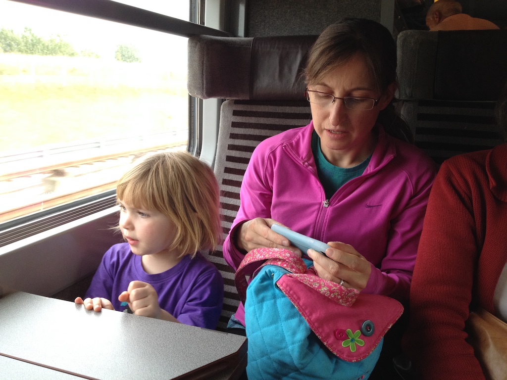
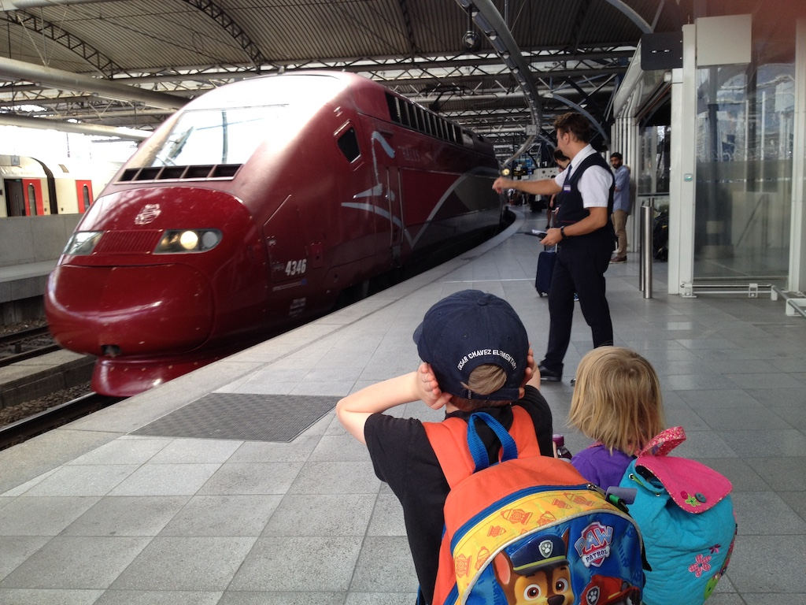
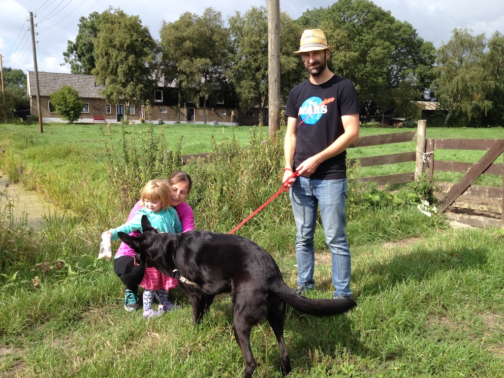
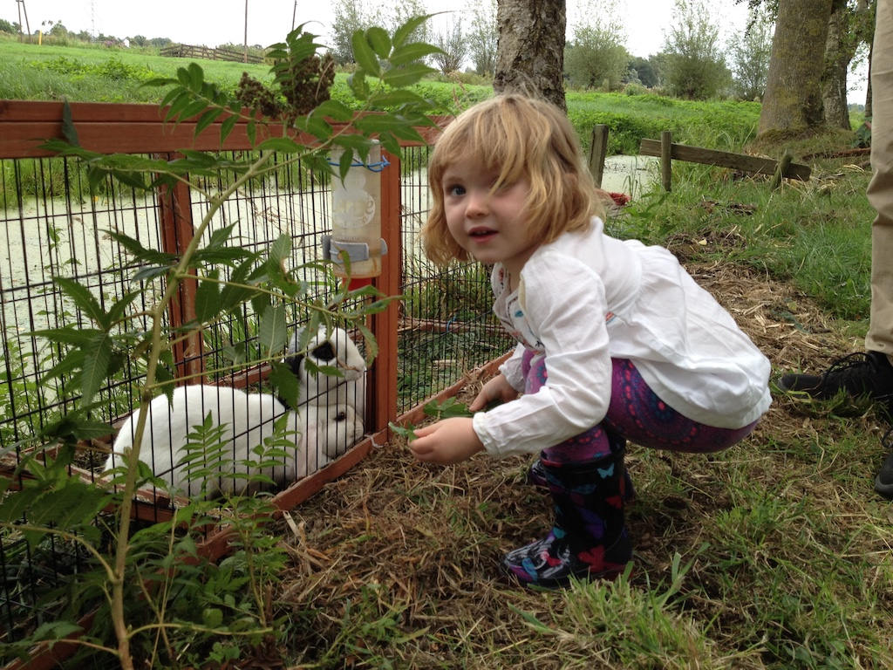
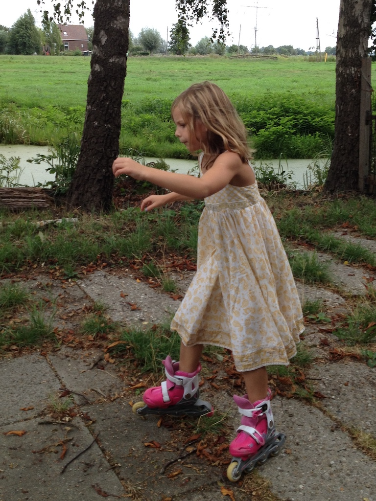
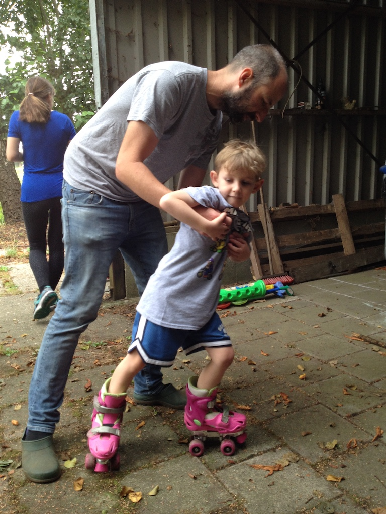
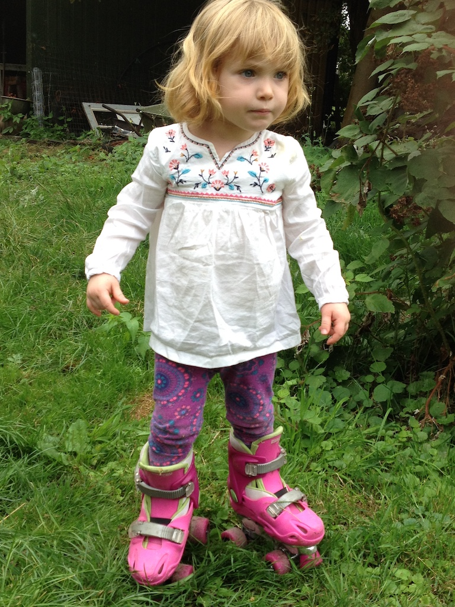
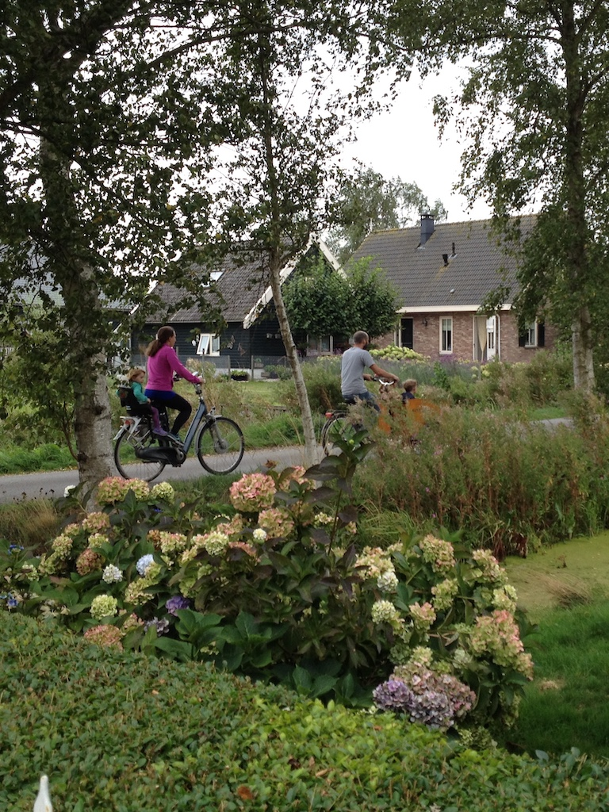
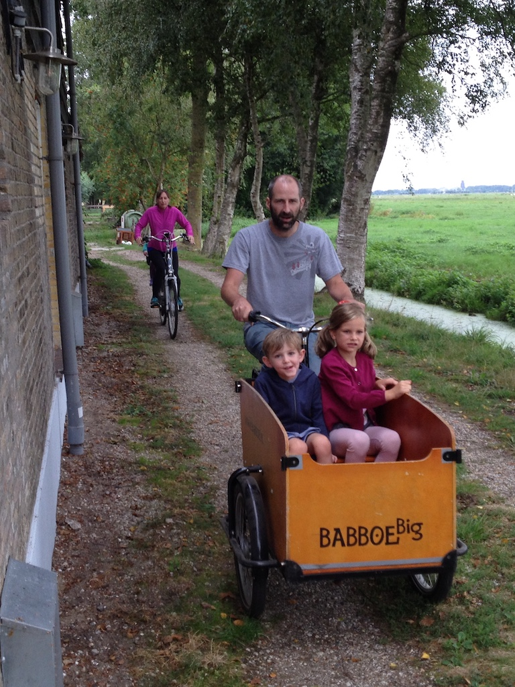

During Victoria's, Austin's and Juniper's visit here in August we took a trip over to the Netherlands to visit Krista, Paul and Rowan. We decided to travel by train, so on Friday 17th August we left at twenty past ten and drove to Ebbsfleet. The journey (on main roads) was a bit slow in places, but we arrived at Ebsfleet by midday. We went through passport control and sat at a table to have our lunch, watching the trains. As you can see, Juniper was being a 'terrible two' and insisted on sitting on a seat rather than on Victoria's lap.
At Brussels we changed to the Thalys train from Paris to Amsterdam, although we got off at Rotterdam, arriving just after six o'clock local time, where Paul met us. We then took the Metro out to Capelsebrug, where Krista and her Mother (we needed two cars) met us and took us to Berkenwoude.
The children were up surprisingly early, considering how late they went to sleep. We went for a short walk down the road before lunch, which was a barbecue. It turned colder over lunchtime, so we ate inside. Greet and Wim joined us. We then played in the garden and later inside, before having an early tea. Unusually, they were all in bed and asleep by eight.
Sunday was a relatively quiet, but nevertheless tiring day. After pancakes for breakfast we spent the morning just having baths, showers and generally messing around (including feeding rabbits). Austin decided that he would try his hand at roller skating (with a little help from his Uncle), having seen Rowan skate up and down the drive. Then Juniper showed him how it was done!
  
After lunch Paul, Angela and I took Flow for a walk and then I helped Krista peel apples from the garden for a crumble. Just before dinner they decided that they wanted to go to the playground, so Paul took Rowan and Austin in the box bike and Victoria had an electric bike with Juniper on the back. Surprisingly they were back in time for dinner (spaghetti carbonara), followed by apple crumble and custard. After a game they all went off to bed, at least starting all in Rowand's room.
 On Monday no one seemed in any hurry to get up and get ready this morning. However, we left Berkenvouder (in two cars) just after 10:30 and caught the metro from Cappelsebrug to Rotterdam. We decided to buy some sandwiches and other things in Albert Heinz in the station to take with us to eat on the train.
The Thalys train from Amsterdam was on time today and so we reached Brussels in time to join the queue for the Eurostar. We left the car park at Ebbsfleet at four o'clock, were home at 5:30 and were eating dinner by 6:30.
© David James 2018 Last updated: 9th November 2018